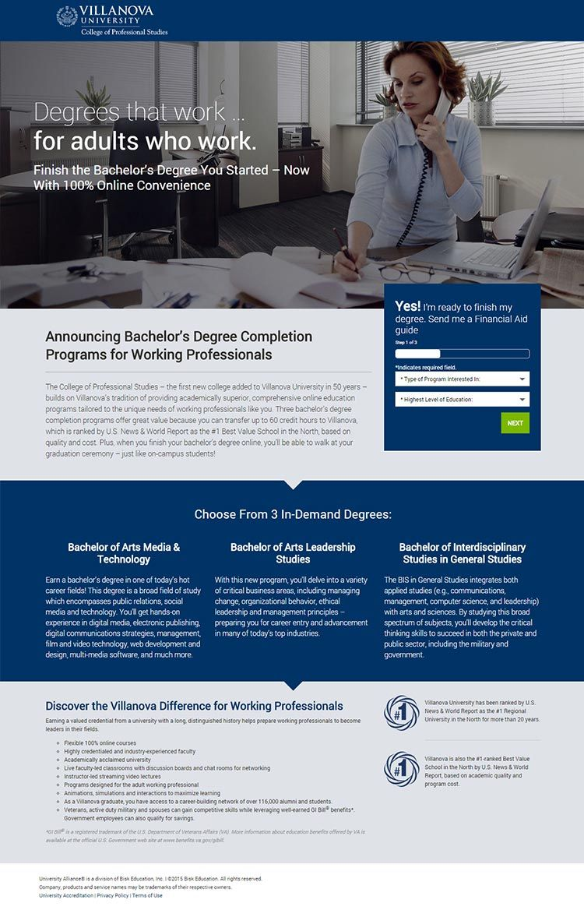

Project Type: Landing Page
My Role: Developer
I worked as a developer on this landing page created to promote Villanova University’s 3 new Undergrad degrees. This landing page was tailored to speak to the working adult professional striving to complete their degree online while balancing their current career and family life.
View Live Project 